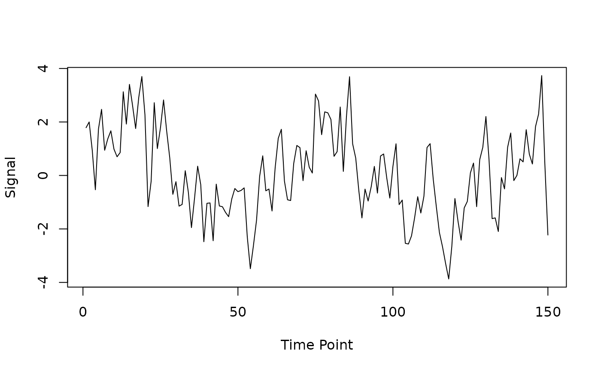

This function simulates realistic fMRI noise by combining:
Temporal autocorrelation using an ARMA model
Low-frequency drift
Physiological noise (cardiac and respiratory)
Arguments
- n
The number of time points in the fMRI time series
- TR
The repetition time in seconds (default is 1.5)
- ar
A numeric vector containing autoregressive (AR) coefficients (default is c(0.3))
- ma
A numeric vector containing moving average (MA) coefficients (default is c(0.5))
- sd
The standard deviation of the white noise component (default is 1)
- drift_freq
Frequency of the low-frequency drift in Hz (default is 1/128)
- drift_amplitude
Amplitude of the low-frequency drift (default is 2)
- physio
Logical; whether to add simulated physiological noise (default is TRUE)
- seed
An optional seed for reproducibility (default is NULL)
Examples
# Simulate noise for a 5-minute scan with TR=2s
n_timepoints <- 150 # 5 minutes * 60 seconds / 2s TR
noise <- simulate_noise_vector(n_timepoints, TR = 2)
plot(noise, type = "l", xlab = "Time Point", ylab = "Signal")
